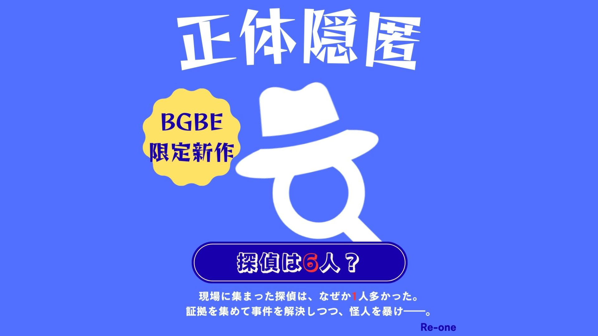

事件×正体隠匿
探偵は6人？
現場に集まった探偵は、なぜか１人多かった。

こんなゲーム
Recommended for
ゲーム概要
事件解決のために集められた探偵たち。その中に、捜査を攪乱して楽しむ怪人が1人……。
探偵である貴方は、証拠を集めながら事件を解決し、紛れ込んだ怪人も暴かなければならない。
信じられるのは、自分の目か、仲間の証言か――？
BGBE2026でしか手に入らない限定新作！
高度な心理戦
嘘と真実を使い分けて戦況を操作しよう
数字で解くミステリー
数字を組み合わせて解決条件をクリアせよ
多彩な事件シナリオ
事件条件ごとに異なる展開が生まれる
会話が生むドラマ
議論を尽くして怪人を暴き出せ！
購入する
Shop
基本情報
- プレイ人数
- 4〜6人
- プレイ時間
- 10分〜
- 対象年齢
- 10歳以上
- ジャンル
- 正体隠匿
入っているもの
- 遊び方等カード
- 1枚
- 役カード
- 全2種類 6枚
探偵 5枚、怪人 1枚 - 証拠カード
- 全8種類 8枚
1~8の数字が記載されたカード：1枚ずつ - 事件一覧カード
- 1枚（記載されている事件は6種類）
事件一覧
- 1. 巨大時限爆弾
- 解決条件：2枚のカードの合計が「10」以上
- 2. 偶発的テロリズム
- 解決条件：2枚のカードの合計が「偶数」
- 3. スナイパーの痕跡
- 解決条件：2枚のカードの合計が「8~11」の間
- 4. 素敵な逃走劇
- 解決条件：2枚のカードの合計が「素数」
- 5. 双子行方不明
- 解決条件：2枚のカードの数字が「連続」
※連続=2枚のカードの数字の差が1 - 6. お屋敷密室殺人事件
- 解決条件：2枚のカードの合計が「5」以下
ルール
★勝利条件
【探偵側の勝利】
- 事件解決：最後に選ばれた2枚の証拠カードが、事件の「解決条件」を満たすこと。
- 怪人の確保：または、途中の投票で「怪人」を正しく見つけ出すこと。
【怪人側の勝利】
- 事件解決阻止：正体を隠し通し、最後に選ばれた2枚の証拠カードが事件の「解決条件」を満たさない（失敗する）こと。
★ゲームの準備
- 事件発生
「事件一覧カード」から、今回挑む事件を1つ選びます。そこに書かれた条件（例：合計10以上など）がクリアすべき目標となります。 - 役職決定
役カードの内、「怪人カード」1枚とプレイヤー人数から1枚引いた枚数の「探偵カード」を混ぜ、裏向きで各プレイヤーに1枚ずつ配ります。 - 証拠品の捜索
数字の書かれた「証拠カード（1〜8）」をよく混ぜ、裏向きで各プレイヤーに1枚ずつ配ります。 - 現場の確保
上記（3.証拠品の捜索）で配られずに残った証拠カードは、裏向きのままテーブル中央（場）に並べます。 - 手札確認
全員、自分の「役カード」と手元の「証拠カード」をこっそり確認します。この2枚は他プレイヤーに見せてはいけません。 - 順番決め
ジャンケン等でスタートプレイヤーを決めます。
★ゲームの進行
プレイヤー達は事件解決のために必要な証拠カード2枚を議論を経ながら決定します。その過程で怪人も暴いてください。
- 捜査フェーズ（見るだけ）
スタートプレイヤーから時計回りに1人ずつ、場にある証拠カードの中から1枚だけを選び、自分だけ内容を見て元の場所に裏向きで戻します。他プレイヤーが見たカードと同じものを見ても構いません。 - 交換フェーズ（入れ替える）
スタートプレイヤーから時計回りに1人ずつ、「自分の手元の証拠カード」と「場の証拠カード」を1回だけ交換することができます。（※パスも可） - 議論フェーズ①（3分以内）
全員で話し合います。自分が持っている証拠カードの情報や、場で見た証拠カードの情報を共有し、「誰と誰の証拠カードを使えば事件を解決できるか」を相談してください。 - 怪人当てフェーズ（投票）
議論を止め、怪人の追放を行います。「せーの」で全員一斉に「怪人だと思う人」を指差します。- 最多票のプレイヤーが怪人だった場合：即座に【探偵側の勝利】となり、ここでゲーム終了です。
- 最多票のプレイヤーが探偵（冤罪）だった場合：そのプレイヤーは役カードと手元の証拠カードを公開し、これ以降発言できなくなります。さらに、公開された証拠カードはゲームから除外され、事件解決には使用できません。（※ゲームは続行し、議論フェーズ②へ進みます。）
- 議論フェーズ②（3分以内）
残ったメンバーで、再度「誰と誰の証拠カードを使うか」を相談します。 - 事件解決フェーズ（投票）
「せーの」で全員一斉に、事件解決に使いたい証拠カードを決めます。事件解決には2枚のカードを使うため、2人を両手で指さしてください。（※自分への投票も可）
得票数の多い上位2名は手元の証拠カードを表向きに公開します。
★ゲームの終了と判定
公開された2枚の証拠カードで最終判定を行います。
【怪人の妨害】
事件解決のため選ばれた2名の中に「怪人役」が含まれていた場合、そのプレイヤーが出した証拠カードは、書かれている数字に関わらず強制的に「−5」として扱われます。
事件解決のため選ばれた2名の中に「怪人役」が含まれていた場合、そのプレイヤーが出した証拠カードは、書かれている数字に関わらず強制的に「−5」として扱われます。
～最終判定～
2枚の数字（怪人は−5）を組み合わせ、事件カードの条件を確認します。
2枚の数字（怪人は−5）を組み合わせ、事件カードの条件を確認します。
- 条件達成：探偵側の勝利！
- 条件未達：怪人側の勝利！
Q&A
Q.
自分の証拠カードを、他のプレイヤーに見せてもいい？
A.
いいえ、絶対にカードの表を見せてはいけません。口頭で「私は8を持っています」など伝えるのはOKですが、それが本当か嘘かは他のプレイヤーが判断しなければなりません。
Q.
嘘をついてもいい？
A.
もちろんです。
Q.
怪人役が持っている証拠カードの数字は、計算時にどうなる？
A.
カードに書かれている数字に関係なく、必ず「−5」として計算します。
例）探偵「7」と怪人「8」が選ばれた場合、7-5で合計は「2」となり、「2」で事件解決条件を満たしているかを判定します。
例）探偵「7」と怪人「8」が選ばれた場合、7-5で合計は「2」となり、「2」で事件解決条件を満たしているかを判定します。
Q.
もし「怪人当てフェーズ」や「事件解決フェーズ」で投票が同数（引き分け）になった場合はどうする？
A.
得票数が最多のプレイヤー同士で決選投票orジャンケンorスタートプレイヤーが最終決定などで決めてください。
Q.
事件解決フェーズで、怪人役のカードが選ばれましたが計算結果が偶然「事件解決条件」を満たしました。どうなる？
A.
探偵側の勝利となります。怪人の妨害（−5）があったとしても、結果的に条件さえ満たしていれば事件解決とみなされます。
クレジット
- ゲームデザイン
- 春日利津
- グラフィックデザイン
- 春日利津
- リリース日
- 2026/01/31 (ver1.0)